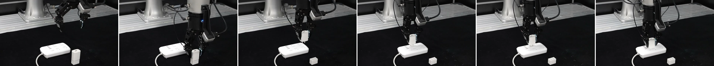

Predict & plan
A video expert predicts future visual and tactile observations while an action expert jointly generates an action chunk.
in World-Action Models for Contact-Rich Manipulation
1 School of Data Science, Fudan University2 Shanghai Innovation Institute3 NeoteAI
 01 / PRECISIONCharger plug ↗
01 / PRECISIONCharger plug ↗
 02 / ALIGNMENTExpansion card ↗
02 / ALIGNMENTExpansion card ↗
 03 / FRAGILITYPotato chip ↗
03 / FRAGILITYPotato chip ↗
 04 / GRIP CONTROLEmpty bottle ↗
04 / GRIP CONTROLEmpty bottle ↗
 05 / LONG HORIZONFruit transfer ↗
05 / LONG HORIZONFruit transfer ↗
Five real-world tasks. One prediction-informed tactile feedback loop.
Average task success+16 percentage points over T-Rex
Per tactile correction32.9 Hz with a reusable cache
Lower inference latencyCompared with regenerating a chunk
A robot can plan what happens next.
Touch tells it what is happening now.
Small contact errors can jam an insertion or break a fragile object. Future tactile predictions provide useful expectations, but those predictions are made before an action chunk begins.
TacPAC connects this anticipated contact to live tactile feedback. A tactile expert reads each new tactile observation against a cached representation of the prediction and plan, then corrects the actions that have yet to execute. The robot keeps moving throughout.
Plan once per chunk. Read new touch against the plan. Update what comes next.
The video and action experts jointly generate future visual and tactile observations and an action chunk through shared self-attention.
Architecture redrawn from the supplied pipeline artwork and paper Figure 2. Image tiles indicate visual and tactile modalities.
A video expert predicts future visual and tactile observations while an action expert jointly generates an action chunk.
A clean prefill pass stores predicted tactile and action representations as a reusable, layer-wise key–value cache.
Each new tactile frame triggers one expert pass, producing delta actions for the unexecuted part of the chunk.
Observe at m. Compute while the arm moves. Apply the delta only from m + d onward.
32 actions remain; the correction can update 30 actions after the 2-step latency window.
30 / 48 actionsInteractive timing illustration, slowed for clarity. H = 48; robot control = 30 Hz. d is measured from recent correction latency, not fixed. The paper reports d = 0 for most execution; only 1.6% of calls span ≥1 control step.
Explore complete rollouts across precision insertion, fragile-object handling, and force-sensitive manipulation.
Precise alignment under constrained contact.
iVideos show selected successful or failed rollouts, not all trials. Success rates summarize 20 trials per method per task. Speed applies equally to all three videos; each stops at its final frame.

A Flexiv Rizon 4 uses two InTac S1 tactile sensors in its gripper, a wrist-mounted Intel RealSense D405, and a third-person Intel RealSense D435i.
TacPAC takes a task instruction, two camera views, proprioception, and two tactile views. All methods are evaluated on the same five tasks with 20 trials per task.
Full evaluation protocol in the paper ↗64% average success, with prediction and correction working together.
Average gain over the strongest baseline, T-Rex.
20 trials per method per task · 100 trials per method overall
| Method | Plug | Fruit | Chip | Bottle | Card | Average |
|---|
Prediction alone raises average success from 22% to 37%. Giving the corrector access to predicted touch raises 47% to 64%.
| Variant | Prediction | Correction | Tactile cache | Plug | Fruit | Chip | Bottle | Card | Average |
|---|
of all frames
of total tactile change
Contact transitions are the most active phase in every task, yet account for only a small fraction of the prediction target.
Bar heights and error bars were recovered from the original PDF vector paths, not raw measurements. Values below are approximate; error bars retain the published geometry (the caption does not specify their statistical definition). The 4.9% and 18.6% callouts are reported directly in Section 4.3.
Download digitized values (JSON) ↓lower latency per correction
than regenerating a chunk
| Inference stage | Latency ↓ | Rate ↑ |
|---|---|---|
| Chunk generation · ten flow steps | 628.6 ms | 1.59 Hz |
| Cache prefill · one clean pass | 62.6 ms | 15.97 Hz |
| Tactile correction · one pass | 30.4 ms | 32.90 Hz |

TOUCHDark line: tactile activity cₜ (left axis). Rust line: measured gripper width (right axis). Curves preserve the original PDF vector paths. Download trace geometry ↓ The representative training-episode trace and the successful-rollout image strip are from separate episodes, as stated in the supplement; the time cursor applies to the trace only.
If you find this work useful,
please consider citing our paper.
@article{ma2026tacpac,
title={TacPAC: Tactile Prediction and Real-Time Action
Correction in World-Action Models for
Contact-Rich Manipulation},
author={Ma, Zipei and Wei, Xiaofei and Jiang, Junzhe
and Lu, Shunlin and Zhang, Li},
journal={arXiv preprint arXiv:2609.05266},
year={2026},
url={https://arxiv.org/abs/2609.05266}
}